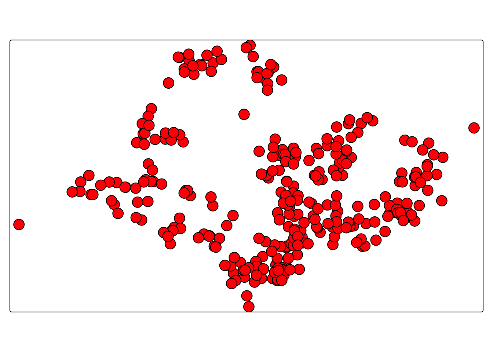

pacman::p_load(sf, tmap, tidyverse)Hands-on Exercise 9B
Visualising Geospatial Point Data
Proportional symbol maps (or graduated symbol maps) use the size of symbols to show differences in values, such as the number of people.
We can create both classed and unclassed maps. Classed maps are called graduated symbols, while unclassed maps are proportional symbols, where symbol size is directly proportional to the values.
In this exercise, you will use the tmap package to create a proportional symbol map showing the number of wins at Singapore Pools outlets.
1. Getting Started
Before we get started, we need to ensure that tmap package of R and other related R packages have been installed and loaded into R.
2. Data Import and Preparation
The code chunk below uses read_csv() function of readr package to import SGPools_svy21.csv into R as a tibble data frame called sgpools.
sgpools <- read_csv("data/SGPools_svy21.csv")The code chunk below shows list() is used to do the job.
list(sgpools) [[1]]
# A tibble: 306 × 7
NAME ADDRESS POSTCODE XCOORD YCOORD `OUTLET TYPE` `Gp1Gp2 Winnings`
<chr> <chr> <dbl> <dbl> <dbl> <chr> <dbl>
1 Livewire (Mar… 2 Bayf… 18972 30842. 29599. Branch 5
2 Livewire (Res… 26 Sen… 98138 26704. 26526. Branch 11
3 SportsBuzz (K… Lotus … 738078 20118. 44888. Branch 0
4 SportsBuzz (P… 1 Sele… 188306 29777. 31382. Branch 44
5 Prime Serango… Blk 54… 552542 32239. 39519. Branch 0
6 Singapore Poo… 1A Woo… 731001 21012. 46987. Branch 3
7 Singapore Poo… Blk 64… 370064 33990. 34356. Branch 17
8 Singapore Poo… Blk 88… 370088 33847. 33976. Branch 16
9 Singapore Poo… Blk 30… 540308 33910. 41275. Branch 21
10 Singapore Poo… Blk 20… 560202 29246. 38943. Branch 25
# ℹ 296 more rows3. Creating a sf data frame from an aspatial data frame
The code chunk below converts sgpools data frame into a simple feature data frame by using st_as_sf() of sf packages
sgpools_sf <- st_as_sf(sgpools,
coords = c("XCOORD", "YCOORD"),
crs= 3414)We can display the basic information of the newly created sgpools_sf by using the code chunk below.
list(sgpools_sf)[[1]]
Simple feature collection with 306 features and 5 fields
Geometry type: POINT
Dimension: XY
Bounding box: xmin: 7844.194 ymin: 26525.7 xmax: 45176.57 ymax: 47987.13
Projected CRS: SVY21 / Singapore TM
# A tibble: 306 × 6
NAME ADDRESS POSTCODE `OUTLET TYPE` `Gp1Gp2 Winnings`
* <chr> <chr> <dbl> <chr> <dbl>
1 Livewire (Marina Bay Sands) 2 Bayf… 18972 Branch 5
2 Livewire (Resorts World Sen… 26 Sen… 98138 Branch 11
3 SportsBuzz (Kranji) Lotus … 738078 Branch 0
4 SportsBuzz (PoMo) 1 Sele… 188306 Branch 44
5 Prime Serangoon North Blk 54… 552542 Branch 0
6 Singapore Pools Woodlands C… 1A Woo… 731001 Branch 3
7 Singapore Pools 64 Circuit … Blk 64… 370064 Branch 17
8 Singapore Pools 88 Circuit … Blk 88… 370088 Branch 16
9 Singapore Pools Anchorvale … Blk 30… 540308 Branch 21
10 Singapore Pools Ang Mo Kio … Blk 20… 560202 Branch 25
# ℹ 296 more rows
# ℹ 1 more variable: geometry <POINT [m]>4. interactive point symbol map
The code chunks below are used to create an interactive point symbol map.
tm_shape(sgpools_sf) +
tm_bubbles(fill = "red",
size = 1,
col = "black",
lwd = 1)
To draw a proportional symbol map, we need to assign a numerical variable to the size visual attribute. The code chunks below show that the variable Gp1Gp2Winnings is assigned to size visual attribute.
tm_shape(sgpools_sf) +
tm_bubbles(fill = "red",
size = "Gp1Gp2 Winnings",
col = "black",
lwd = 1)
The proportional symbol map can be further improved by using the colour visual attribute. In the code chunks below, OUTLET_TYPE variable is used as the colour attribute variable.
tm_shape(sgpools_sf) +
tm_bubbles(fill = "OUTLET TYPE",
size = "Gp1Gp2 Winnings",
col = "black",
lwd = 1)
An impressive and little-know feature of tmap’s view mode is that it also works with faceted plots. The argument sync in tm_facets() can be used in this case to produce multiple maps with synchronised zoom and pan settings.
tm_shape(sgpools_sf) +
tm_bubbles(fill = "OUTLET TYPE",
size = "Gp1Gp2 Winnings",
col = "black",
lwd = 1) +
tm_facets(by= "OUTLET TYPE",
nrow = 1,
sync = TRUE)